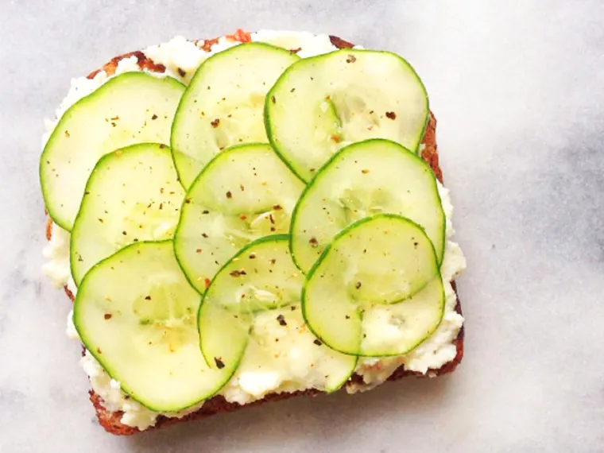

Refreshing Cucumber Tartine

Refreshing every time you eat
The crunchy, cool cucumber over creamy feta and ricotta cheese is a perfect no-hassle snack that’s ready in five minutes. The feta and ricotta is where you’ll find those BCAAs.
Ingredients
- 2 tablespoons crumbled feta cheese
- 2 tablespoons part-skim ricotta cheese
- 1 slice sprouted grain bread, toasted
- 9-12 very thin cucumber slices
- Truffle salt (or sea salt)
Steps to Make it
- In a small dish, mix feta cheese and ricotta together. Spread cheese mixture on toasted bread.
- Layer cucumber slices on top of cheese and sprinkle with truffle salt. Devour immediately.